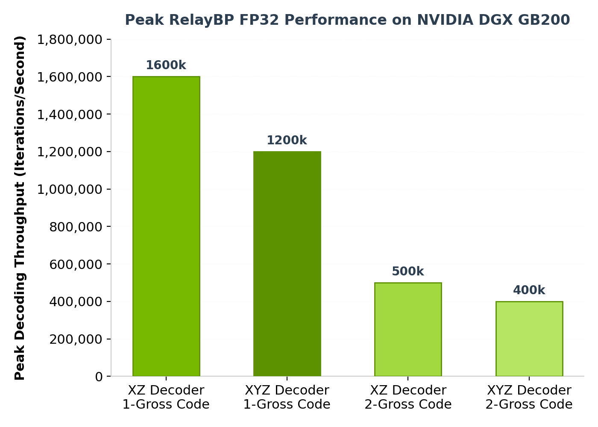

Real-time decoding is crucial to fault-tolerant quantum computers. By enabling decoders to operate with low latency concurrently with a quantum processing unit (QPU), we can apply corrections to the device within the coherence time. This prevents errors from accumulating, which reduces the value of results received. We can do this online, with a real quantum device, or offline, with a simulated quantum processor.
To help solve these problems and enable research into better solutions, NVIDIA CUDA-Q QEC version 0.5.0 includes a range of improvements. These include support for online real-time decoding, new GPU-accelerated algorithmic decoders, infrastructure for high-performance AI decoder inference, sliding window decoder support, and more Pythonic interfaces.
Real-Time Decoding Workflow with CUDA-Q QEC
Users can perform this in a four-stage workflow. In order, these are:
1. DEM generation: Characterizing device error rates.
2. Decoder configuration: Setting parameters and generating config.
3. Decoder loading and initialization: Setting up the implementation in the runtime.
4. Real-time decoding: Enqueuing stabilizers inside active kernels.
Step 1: Generate Detector Error Model (DEM)
First, we characterize how the device errors behave during operation. Using a helper function, we can generate the detector error model (DEM) from a quantum code, noise model, and circuit parameters.
import cudaq
import cudaq_qec as qec
print("Step 1: Generating DEM...")
cudaq.set_target("stim")
noise = cudaq.NoiseModel()
noise.add_all_qubit_channel("x", cudaq.Depolarization2(0.01), 1)
dem = qec.z_dem_from_memory_circuit(code, qec.operation.prep0, 3, noise)
Step 2: Choose and Configure the Decoder
Using the DEM, the user configures the decoder and then saves this configuration to a YAML file. This file ensures that the decoders can correctly interpret the syndrome measurements.
# Create decoder config
config = qec.decoder_config()
config.id = 0
config.type = "nv-qldpc-decoder"
config.block_size = dem.detector_error_matrix.shape[1]
# For complete details check out:
# nvidia.github.io/cudaqx/examples_rst/qec/realtime_decoding.html
Step 3 & 4: Load Config and Run Circuit
Before circuit execution, the user loads the YAML file. CUDA-Q QEC interprets the information, sets up the appropriate implementation in the decoder, and registers it with the CUDA-Q runtime.
# Save decoder config
with open("config.yaml", 'w') as f:
f.write(config.to_yaml_str(200))
# Load config and run circuit
qec.configure_decoders_from_file("config.yaml")
run_result = cudaq.run(qec_circuit, shots_count=10)
GPU-Accelerated RelayBP Decoders
A recently developed decoder algorithm helps solve the pitfalls of belief propagation decoders, a popular class of quantum low-density parity check (QLDPC) algorithmic decoders. Traditional BP+OSD (Belief Propagation with Ordered Statistics Decoding) relies on a GPU-accelerated BP decoder and then uses an Ordered Statistics Post-Processing Algorithm on CPU. If BP fails, OSD kicks in. This makes it hard to parallelize and optimize for the low latency needed to enable real-time error decoding.
RelayBP modifies BP methods with the concept of memory strengths, at each node of a graph, and controls how much each node remembers or forgets past messages. This dampens or breaks the harmful symmetries that usually trap BP, preventing it from converging.

Users can instantiate a RelayBP decoder easily with a few lines of code:
import numpy as np
import cudaq_qec as qec
# Simple 3x7 parity check matrix for demonstration
H_list = [[1, 0, 0, 1, 0, 1, 1], [0, 1, 0, 1, 1, 0, 1],
[0, 0, 1, 0, 1, 1, 1]]
H = np.array(H_list, dtype=np.uint8)
# Configure relay parameters
srelay_config = {
'pre_iter': 5, # Run 5 iterations with gamma0 before relay legs
'num_sets': 3, # Use 3 relay legs
'stopping_criterion': 'FirstConv' # Stop after first convergence
}
# Create a decoder with Relay-BP
decoder_relay = qec.get_decoder("nv-qldpc-decoder",
H,
use_sparsity=True,
bp_method=3,
composition=1,
max_iterations=50,
gamma0=0.3,
gamma_dist=[0.1, 0.5],
srelay_config=srelay_config,
bp_seed=42)
print("Created decoder with Relay-BP")
# Decode a syndrome
syndrome = np.array([1, 0, 1], dtype=np.uint8)
decoded_result = decoder_relay.decode(syndrome)
AI Decoder Inference with TensorRT
AI decoders are becoming increasingly popular for handling specific error models, offering better accuracy or latency than algorithmic decoders. Once trained, users can export their neural network to ONNX, and run it with the CUDA-Q QEC NVIDIA TensorRT-based AI decoder inference engine.
import cudaq_qec as qec
import numpy as np
# A placeholder matrix is provided here to satisfy the API
H = np.array([[1, 0, 0, 1, 0, 1, 1],
[0, 1, 0, 1, 1, 0, 1],
[0, 0, 1, 0, 1, 1, 1]], dtype=np.uint8)
# Create TensorRT decoder from ONNX model
decoder = qec.get_decoder("trt_decoder", H,
onnx_load_path="ai_decoder.onnx")
# Decode a syndrome
syndrome = np.array([1.0, 0.0, 1.0], dtype=np.float32)
result = decoder.decode(syndrome)
print(f"Predicted error: {result}")
Sliding Window Decoding
Sliding window decoders enable a decoder to handle circuit-level noise across multiple syndrome extraction rounds. These decoders process the syndrome before the complete measurement sequence is received, which reduces latency, although it can slightly increase logical error rates.
import cudaq
import cudaq_qec as qec
import numpy as np
cudaq.set_target('stim')
num_rounds = 5
code = qec.get_code('surface_code', distance=num_rounds)
noise = cudaq.NoiseModel()
noise.add_all_qubit_channel("x", cudaq.Depolarization2(0.001), 1)
statePrep = qec.operation.prep0
dem = qec.z_dem_from_memory_circuit(code, statePrep, num_rounds, noise)
inner_decoder_params = {'use_osd': True, 'max_iterations': 50, 'use_sparsity': True}
opts = {
'error_rate_vec': np.array(dem.error_rates),
'window_size': 1,
'num_syndromes_per_round': dem.detector_error_matrix.shape[0] // num_rounds,
'inner_decoder_name': 'nv-qldpc-decoder',
'inner_decoder_params': inner_decoder_params,
}
swdec = qec.get_decoder('sliding_window', dem.detector_error_matrix, **opts)


The reason we provide BP iteration per second rather than full decodes per second is because the number of BP iterations required for each syndrome is highly dependent on the exact syndrome, so any timing for full decode cycles is only valid for a very specific error rate under a very specific noise model. But the number of BP iterations per second is relatively constant, and is hence a more reproducible timing metric.